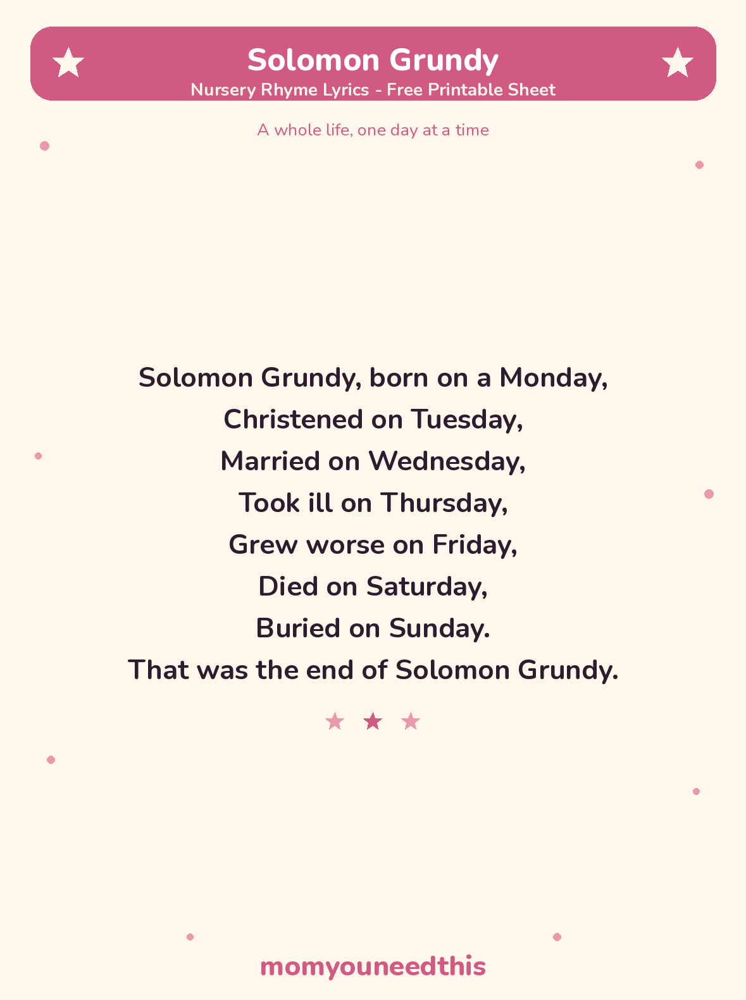

Solomon Grundy A Whole Life in One Week, With Lyrics and a Free Printable
A whole life in seven lines makes this the handiest days-of-the-week rhyme there is: one finger per day, walking Grundy from Monday to Sunday. Older toddlers start chanting the weekdays along with you surprisingly quickly.
Last updated: October 25, 2026
Quick Answer
Solomon Grundy is a traditional nursery rhyme that tells a whole life in seven days, one line per day, from “born on a Monday” to “buried on Sunday.” The complete lyrics are on this page, ending “That was the end of Solomon Grundy,” with a free printable lyrics sheet.
At a Glance
- Rhyme: Solomon Grundy
- Type: Story rhyme / days-of-the-week rhyme
- Best for: Ages 3–6
- Lyrics: Complete — all 7 days
- Printable: 1 lyrics sheet
- Tradition: Collected in print in 1842
- Cost: Free — print at home
🎵 Solomon Grundy Lyrics
The complete rhyme — all seven days, Monday to Sunday, in one short verse.
Solomon Grundy, born on a Monday,
Christened on Tuesday,
Married on Wednesday,
Took ill on Thursday,
Grew worse on Friday,
Died on Saturday,
Buried on Sunday.
That was the end of Solomon Grundy.

✂️ Download Your Free Solomon Grundy Lyrics Sheet
The complete rhyme on one sheet — one line for every day of the week.
⬇️ Download Free Lyrics Sheet 🖨️ Print🎁 Free printable for ages 3–6
📅 About This Rhyme
This little poem does something remarkable: it squeezes a whole human life — being born, growing up, marrying, growing old and ill, and coming to the end — into a single week, one line for each day. For children, that makes it two things at once: a gentle first story about the shape of a life, and the handiest days-of-the-week rhyme in the language, because the days arrive in perfect order, carried along by the story.
The wording has barely changed since the rhyme was collected in print in 1842. That earliest text says “Worse on Friday” and ends “This is the end of Solomon Grundy”; the version on this page — “Grew worse on Friday” and “That was the end of Solomon Grundy” — is the form most often sung today. Nobody knows whether a real Solomon Grundy ever existed, and any story claiming otherwise is a guess.
🖨️ How to Use This Rhyme
- Sing it through, one day at a time. Pause on each day and hold up a finger for it — seven lines, seven fingers, and the week is counted.
- Find today in the rhyme. Ask your child which day it is today, then sing up to that line and stop. Tomorrow, the rhyme goes one line further.
- Print the lyrics sheet. Pin it near a calendar or in the kitchen, where the days of the week come up every morning.
- Let your child “read” it back. The days are printed in order on the sheet, so a child can point to each day as they say it — a real first step into reading words they already know by heart.
🎵 More Rhymes & Fun
🎵 Nursery Rhymes
The full collection of classic rhymes to sing together, each with its own printable lyrics sheet. Browse all nursery rhymes.
🌉 Jack and Jill
The classic tumble-down-the-hill story rhyme, with its traditional Dame Dob verse. Sing Jack and Jill.
🌙 Wee Willie Winkie
The gentle bedtime rhyme about the little figure who checks that every child is in bed. Sing Wee Willie Winkie.
📚 Learning Activities
The full hub of free printable activities for toddlers and preschoolers. Browse activities.
❓ Solomon Grundy FAQ
What are the lyrics to Solomon Grundy?
The complete Solomon Grundy nursery rhyme lyrics are in the lyrics section above — the whole week in one verse, from “born on a Monday” to “That was the end of Solomon Grundy.” They are also on the free printable lyrics sheet on this page.
What age is Solomon Grundy for?
It suits ages 3 to 6 best. Younger preschoolers enjoy the steady rhythm and the day names; older children start to follow the bigger idea — that the rhyme tells a whole life, squeezed into one week.
Is Solomon Grundy good for teaching the days of the week?
Yes — it is one of the best rhymes for it. The seven days arrive in order, each on its own line, so children learn the sequence Monday to Sunday simply by singing the story. Point to each day on the printable sheet as you sing it.
Can I print the lyrics sheet?
Yes — the lyrics sheet is free to print at home with no signup. It carries the complete rhyme, exactly as printed on this page, in big, clear type.